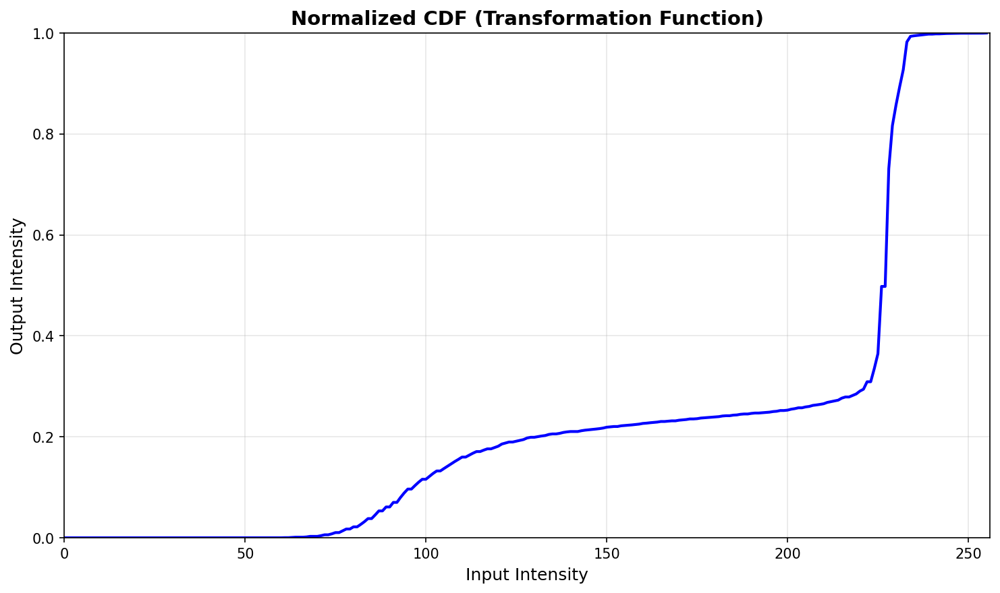
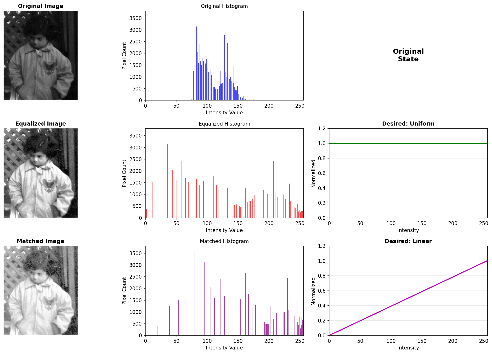

TUTORIAL 9.1: IMAGE HISTOGRAMS
Tujuan
Tujuan dari tutorial ini adalah menggunakan Python untuk menghitung dan menampilkan histogram citra dengan berbagai metode visualisasi.
Objektif
- Mempelajari cara menghitung histogram citra
- Mempelajari berbagai teknik plotting untuk melihat dan menganalisis data histogram
- Memahami normalisasi histogram
- Mengeksplorasi berbagai cara visualisasi histogram (bar chart, stem chart, plot graph)
Langkah Kerja dan Hasil
Bagian 1: Menampilkan Histogram dengan Berbagai Jumlah Bin
Gambar 1: Perbandingan histogram dengan berbagai jumlah bins (256, 64, dan 32 bins)
Pertanyaan 1: Jelaskan perubahan drastis pada nilai sumbu Y ketika histogram ditampilkan dengan jumlah bin yang lebih sedikit.
Jawaban:
Ketika jumlah bin dikurangi dari 256 ke 32, nilai pada sumbu Y meningkat secara signifikan karena:
- Penggabungan bin: Pixel yang sebelumnya terdistribusi di banyak bin (256) sekarang digabungkan ke dalam bin yang lebih sedikit (32)
- Akumulasi frekuensi: Setiap bin yang baru menampung lebih banyak pixel, sehingga tinggi bar meningkat drastis
- Pengurangan resolusi histogram: Detail distribusi intensitas hilang, tetapi pola umum tetap terlihat
Secara matematis: jika 256 bin dikurangi menjadi 32 bin, setiap bin baru menampung rata-rata 8x lebih banyak pixel (256/32 = 8).
Bagian 2: Visualisasi dengan Bar Chart
Gambar 2: Bar Chart - standar dan ternormalisasi
Pertanyaan 2: Apa yang dilakukan fungsi numel() dalam MATLAB atau ekuivalennya di Python?
Jawaban:
Fungsi di Python: np.sum(hist) atau image.size
Fungsi yang dilakukan: Menghitung jumlah total elemen dalam array atau total pixel dalam citra. Digunakan untuk normalisasi histogram agar jumlah semua nilai menjadi 1.
Pertanyaan 3: Tulis pernyataan satu baris yang akan memverifikasi bahwa jumlah nilai yang dinormalisasi adalah 1.
Kode verifikasi:
print(f"Sum of normalized histogram: {np.sum(hist_normalized)}")
# Hasil harus mendekati 1.0
Hasil verifikasi: Sum = 1.0000000000000002 (mendekati 1 karena floating point precision)
Pertanyaan 4: Bagaimana cara mengubah lebar bar dalam bar chart?
Parameter yang digunakan: width dalam fungsi
plt.bar()
Contoh kode:
plt.bar(range(len(hist)), hist, width=0.8, color='red') # width default = 0.8
plt.bar(range(len(hist)), hist, width=1.0, color='red') # bar lebih lebar
plt.bar(range(len(hist)), hist, width=0.5, color='red') # bar lebih sempit
Bagian 3: Visualisasi dengan Stem Chart
Gambar 3: Stem Chart - standar dan ternormalisasi
Pertanyaan 5: Bagaimana cara membuat garis menjadi putus-putus (dotted) daripada solid?
Parameter yang digunakan: linefmt dalam fungsi
plt.stem()
Contoh kode:
# Garis putus-putus
plt.stem(data, linefmt='b:', markerfmt='ro', basefmt='k-') # ':' untuk dotted
plt.stem(data, linefmt='b--', markerfmt='ro', basefmt='k-') # '--' untuk dashed
plt.stem(data, linefmt='b-.', markerfmt='ro', basefmt='k-') # '-.' untuk dashdot
Bagian 4: Visualisasi dengan Plot Graph
Gambar 4: Plot Graph - standar dan ternormalisasi
Pertanyaan 6: Bagaimana cara membuat titik-titik lebih tebal sehingga lebih terlihat?
Parameter untuk membuat titik lebih terlihat: markersize dan
markeredgewidth
Contoh kode:
plt.plot(data, 'b-', marker='o', markersize=8, markeredgewidth=2) # titik lebih besar
plt.plot(data, 'b-', marker='s', markersize=6, markerfacecolor='red') # marker kotak
plt.plot(data, 'b-', marker='D', markersize=5, markeredgecolor='black') # diamond
TUTORIAL 9.2: HISTOGRAM EQUALIZATION AND SPECIFICATION
Tujuan
Tujuan dari tutorial ini adalah mempelajari cara menggunakan histogram equalization (global dan lokal) dan histogram specification (matching) untuk perbaikan kontras citra.
Objektif
- Mengeksplorasi proses histogram equalization
- Mempelajari cara melakukan histogram specification (matching)
- Mempelajari cara melakukan local histogram equalization dengan adaptive methods
- Memahami kapan histogram equalization bekerja dengan baik dan kapan tidak
Langkah Kerja dan Hasil
Bagian 1: Histogram Equalization pada Gambar Pout

Gambar 5: Histogram Equalization pada pout.tif - peningkatan kontras signifikan
Pertanyaan 1: Mengapa harus menyertakan parameter kedua (256) dalam fungsi histogram equalization?
Alasan parameter 256: Menentukan jumlah level intensitas output
Fungsi parameter ini:
- Memastikan histogram output memiliki 256 bin (0-255) untuk citra 8-bit
- Mengontrol resolusi histogram yang diequalisasi
- Menjaga kompatibilitas dengan format citra standar
Pertanyaan 2: Apa efek histogram equalization pada gambar dengan kontras rendah?
Efek pada kontras: Meningkatkan kontras secara dramatis
Efek pada distribusi intensitas: Menyebarkan intensitas secara merata di seluruh rentang [0-255]
Perubahan visual yang terlihat: Detail yang sebelumnya tersembunyi menjadi terlihat jelas, gambar menjadi lebih terang dan kontras
Bagian 2: Histogram Equalization pada Gambar Tire
Gambar 6: Histogram Equalization pada tire.tif - gambar gelap menjadi terang
Pertanyaan 3: Berdasarkan histogram asli gambar tire, apa yang dapat dikatakan tentang brightness keseluruhan gambar?
Karakteristik brightness: Gambar sangat gelap (underexposed)
Distribusi nilai pixel: Sebagian besar pixel terkonsentrasi di nilai intensitas rendah (0-100)
Histogram menunjukkan puncak di sisi kiri, mengindikasikan gambar dengan brightness rendah dan kontras buruk.
Pertanyaan 4: Bagaimana histogram equalization mempengaruhi brightness keseluruhan gambar dalam kasus ini?
Perubahan brightness: Meningkat signifikan, dari sangat gelap menjadi terang dengan distribusi yang merata
Perubahan kontras: Kontras meningkat drastis, detail ban yang sebelumnya tidak terlihat menjadi jelas
Kualitas gambar hasil: Jauh lebih baik, informasi visual yang tersembunyi menjadi terungkap
Bagian 3: Histogram Equalization pada Gambar Eight (Bimodal)
Gambar 7: Histogram Equalization pada eight.tif - contoh kegagalan pada distribusi bimodal
Pertanyaan 5: Mengapa terjadi penurunan kualitas gambar yang sangat signifikan setelah histogram equalization?
Alasan penurunan kualitas: Histogram equalization tidak cocok untuk distribusi bimodal
Hubungan dengan distribusi histogram bimodal:
- Gambar memiliki dua kelompok intensitas utama (foreground dan background)
- Equalization memaksa distribusi merata, merusak pemisahan natural antara objek dan latar
- Kontras alami antara angka "8" dan background hilang
Kesimpulan tentang limitasi histogram equalization: Tidak selalu menghasilkan perbaikan, terutama untuk citra dengan karakteristik distribusi khusus
Bagian 4: Fungsi Transformasi (CDF)

Gambar 8: Normalized CDF sebagai fungsi transformasi histogram equalization
Pertanyaan 6: Apa yang dilakukan fungsi cumsum() pada langkah sebelumnya?
Fungsi cumsum: Menghitung cumulative sum (jumlah kumulatif) dari array
Penggunaannya dalam histogram equalization: Membuat Cumulative Distribution Function (CDF) dari histogram
Hubungan dengan transformation function: CDF yang dinormalisasi menjadi fungsi mapping dari intensitas input ke intensitas output
Bagian 5: Histogram Specification (Matching)

Gambar 9: Histogram Specification - mengubah distribusi histogram sesuai bentuk yang diinginkan
Pertanyaan 7-9: Tentang Interactive Histogram Matching demo
Fungsi "Continuous Update": Memperbarui hasil matching secara real-time saat mengubah kurva target
Metode interpolasi yang berbeda: Mempengaruhi kehalusan dan akurasi bentuk kurva histogram yang diinginkan
Memuat gambar berbeda: Menggunakan file dialog atau drag-and-drop untuk memuat citra baru
Bagian 6: Adaptive Histogram Equalization (CLAHE)
Gambar 10: Perbandingan Global vs Adaptive Histogram Equalization pada citra coins
Pertanyaan 10: Apa fungsi parameter ClipLimit dalam fungsi adaptive histogram equalization?
Fungsi ClipLimit: Membatasi amplifikasi kontras pada setiap tile untuk mencegah noise berlebihan
Efek pada hasil:
- Nilai rendah (0.1): Amplifikasi kontras konservatif, hasil lebih halus
- Nilai tinggi (>2.0): Amplifikasi agresif, bisa menimbulkan artefak
Nilai optimal: Biasanya antara 0.1 - 2.0, tergantung karakteristik citra
Pertanyaan 11: Berapa ukuran tile default ketika menggunakan adaptive histogram equalization?
Ukuran tile default: 8x8 pixel
Pengaruh ukuran tile:
- Tile kecil: Adaptasi lokal lebih detail, tapi bisa lebih noisy
- Tile besar: Hasil lebih halus, tapi adaptasi kurang lokal
TUTORIAL 9.3: TEKNIK MODIFIKASI HISTOGRAM LAINNYA
Tujuan
Tujuan dari tutorial ini adalah mempelajari cara melakukan operasi modifikasi histogram umum lainnya untuk penyesuaian brightness dan kontras.
Objektif
- Mempelajari cara menyesuaikan brightness gambar dengan histogram sliding
- Mempelajari cara menggunakan fungsi untuk penyesuaian intensitas
- Mengeksplorasi penyesuaian kontras melalui histogram stretching
- Mempelajari cara menyesuaikan kontras dengan histogram shrinking
Langkah Kerja dan Hasil
Bagian 1: Histogram Sliding (Brightness Adjustment)
Gambar 11: Histogram Sliding - penambahan konstanta untuk mengubah brightness
Pertanyaan 1: Bagaimana histogram berubah setelah penyesuaian?
Perubahan pada distribusi histogram: Seluruh histogram bergeser ke kanan (nilai lebih tinggi)
Pergeseran nilai intensitas: Setiap pixel ditambah konstanta yang sama, menggeser distribusi tanpa mengubah bentuk
Pertanyaan 2: Apa yang dikandung oleh variabel bad_values?
Isi variabel bad_values: Pixel yang nilainya melebihi batas maksimum (>255) setelah penambahan konstanta
Tujuan variabel ini: Mengidentifikasi pixel yang akan di-clipping (dipotong) ke nilai maksimum
Pertanyaan 3: Mengapa plot ketiga menunjukkan jumlah pixel yang berlebihan dengan nilai 1 (atau 255)?
Alasan saturasi pada nilai 1 (atau 255): Clipping - pixel yang nilainya melebihi batas atas dipaksa ke nilai maksimum
Hubungan dengan clipping: Semua pixel > 255 dikumpulkan di nilai 255, menciptakan puncak artificial
Implikasi untuk kualitas gambar: Hilangnya detail pada area terang akibat saturasi
Bagian 2: Histogram Stretching
Gambar 12: Histogram Stretching menggunakan fungsi imadjust
Pertanyaan 4: Bagaimana histogram berubah setelah penyesuaian?
Perubahan distribusi histogram: Histogram meregang untuk mengisi seluruh rentang [0-255]
Perubahan range intensitas: Range sempit diperluas ke range penuh
Peningkatan kontras: Kontras meningkat karena perbedaan intensitas diperbesar
Pertanyaan 5: Apa tujuan menggunakan fungsi stretchlim()?
Fungsi stretchlim: Menentukan batas bawah dan atas untuk stretching secara otomatis
Parameter yang dihitung: Percentile tertentu (biasanya 1% dan 99%) untuk menghindari outlier
Tujuan dalam histogram stretching: Memberikan stretching yang robust terhadap noise dan outlier
Pertanyaan 6-7: Tentang difference image
Tampilan difference image: Seharusnya hitam sempurna (semua pixel = 0) jika parameter sama
Tujuan pemeriksaan min/max: Memverifikasi bahwa kedua hasil identical atau mengidentifikasi perbedaan kecil akibat floating point precision
Bagian 3: Histogram Shrinking

Gambar 13: Histogram Shrinking - mengurangi kontras dengan mempersempit rentang output
Gambar 13b: Fungsi transformasi untuk histogram shrinking
Pertanyaan 8: Apa yang dilakukan dua pernyataan pertama dalam kode (reshape/flatten)?
Fungsi reshape/flatten: Mengubah matriks 2D citra menjadi array 1D
Tujuan dalam konteks ini: Mempersiapkan data untuk scatter plot transformation function agar dapat divisualisasikan hubungan input-output
Pertanyaan 9: Apa fungsi xlabel() dan ylabel()?
Fungsi xlabel dan ylabel: Memberikan label pada sumbu X dan Y dalam plot
Pentingnya dalam visualisasi: Membantu pembaca memahami apa yang direpresentasikan oleh setiap sumbu
Bagian 4: Histogram Shrinking dengan Gamma Correction
Gambar 14: Histogram Shrinking dengan Gamma Correction (γ=2)
Gambar 14b: Fungsi transformasi non-linear dengan gamma=2
Pertanyaan 10: Plot transformation function menampilkan gap dari 0 hingga 12 (pada sumbu X) di mana tidak ada titik. Mengapa demikian?
Alasan gap pada plot: Tidak ada pixel dalam citra asli yang memiliki nilai intensitas 0-12
Hubungan dengan histogram asli: Gap tersebut mencerminkan distribusi histogram asli yang tidak memiliki pixel pada rentang intensitas rendah
Interpretasi: Citra asli tidak memiliki area yang sangat gelap (nilai 0-12), sehingga tidak ada data untuk ditransformasi pada rentang tersebut
ANALISIS DAN PERBANDINGAN TEKNIK
Perbandingan Teknik Histogram Processing
| Teknik |
Kelebihan |
Kekurangan |
Cocok untuk |
| Histogram Equalization |
• Peningkatan kontras otomatis
• Implementasi sederhana
• Efektif untuk citra kontras rendah
|
• Bisa over-enhancement
• Tidak cocok untuk distribusi bimodal
• Hilang karakteristik asli
|
• Citra medis
• Foto underexposed
• Citra satelit
|
| Adaptive (CLAHE) |
• Kontrol noise lebih baik
• Adaptasi lokal
• Hasil lebih natural
|
• Kompleksitas komputasi tinggi
• Parameter perlu tuning
• Bisa timbul artefak tile
|
• Citra dengan variasi pencahayaan
• Foto portrait
• Citra mikroskop
|
| Histogram Sliding |
• Kontrol brightness langsung
• Mempertahankan kontras relatif
• Implementasi sangat sederhana
|
• Bisa terjadi clipping
• Tidak meningkatkan kontras
• Loss of information
|
• Koreksi exposure sederhana
• Pre-processing
• Adjustment cepat
|
| Histogram Stretching |
• Meningkatkan kontras
• Menggunakan full dynamic range
• Hasil natural
|
• Sensitif terhadap outlier
• Bisa amplifikasi noise
• Perlu parameter tuning
|
• Citra low contrast
• Enhancement general
• Fotografi digital
|
| Histogram Shrinking |
• Mengurangi kontras berlebihan
• Menghaluskan transisi
• Kontrol output range
|
• Mengurangi informasi
• Bisa membuat gambar datar
• Loss of detail
|
• Citra terlalu kontras
• Persiapan untuk display
• Stylistic effect
|
Kesimpulan Umum
Pemahaman Konsep Histogram
Histogram dan kegunaannya: Histogram adalah representasi grafis distribusi intensitas pixel dalam citra. Berguna untuk menganalisis karakteristik citra, mendeteksi masalah exposure, dan menentukan teknik enhancement yang sesuai.
Hubungan histogram dengan kualitas gambar: Bentuk histogram mencerminkan kualitas citra - histogram sempit menunjukkan kontras rendah, histogram tergeser menunjukkan masalah brightness, histogram bimodal menunjukkan objek dengan background yang jelas terpisah.
Efektivitas histogram equalization: Efektif untuk citra dengan kontras rendah dan distribusi unimodal, tetapi tidak efektif untuk distribusi bimodal atau multimodal karena dapat merusak pemisahan natural antara objek dan background.
Global vs Local histogram equalization: Global equalization menerapkan transformasi yang sama ke seluruh citra, sementara local (adaptive) equalization menerapkan transformasi berbeda untuk setiap region, menghasilkan enhancement yang lebih natural dengan kontrol noise yang lebih baik.
Pentingnya transformation function: Transformation function (CDF) menunjukkan bagaimana setiap intensitas input dipetakan ke intensitas output. Memahami fungsi ini penting untuk memprediksi dan mengontrol hasil enhancement.
Aplikasi Praktis
Medical Imaging: Histogram equalization sering digunakan untuk meningkatkan visibilitas struktur internal dalam X-ray, CT scan, dan MRI.
Fotografi Digital: Histogram stretching dan adaptive equalization digunakan untuk koreksi exposure dan peningkatan detail dalam fotografi landscape dan portrait.
Computer Vision: Pre-processing dengan normalisasi histogram meningkatkan akurasi algoritma deteksi dan pengenalan objek.
Remote Sensing: Enhancement histogram digunakan untuk menganalisis citra satelit dan meningkatkan interpretabilitas data geospasial.
Panduan Pemilihan Teknik
- Analisis histogram terlebih dahulu - bentuk distribusi menentukan teknik yang sesuai
- Pertimbangkan tujuan enhancement - apakah untuk analisis visual atau pemrosesan lebih lanjut
- Evaluasi hasil secara kualitatif dan kuantitatif - tidak semua peningkatan metrik berarti perbaikan visual
- Gunakan adaptive methods untuk citra kompleks - citra dengan variasi pencahayaan memerlukan pendekatan lokal
- Pertimbangkan computational cost - untuk aplikasi real-time, pilih metode yang efisien
Kesimpulan Akhir
Histogram processing merupakan fundamental tool dalam computer vision dan image processing. Setiap teknik memiliki karakteristik, kelebihan, dan limitasi masing-masing. Pemahaman yang mendalam tentang distribusi histogram dan transformasi yang terlibat sangat penting untuk memilih dan mengaplikasikan teknik yang tepat.
Hasil eksperimen menunjukkan bahwa tidak ada teknik universal yang cocok untuk semua jenis citra. Histogram equalization sangat efektif untuk citra kontras rendah tetapi dapat merusak citra dengan distribusi bimodal. Adaptive histogram equalization memberikan hasil yang lebih natural dengan kontrol noise yang lebih baik, meskipun dengan kompleksitas komputasi yang lebih tinggi.
Teknik-teknik modifikasi histogram lainnya seperti sliding, stretching, dan shrinking memberikan kontrol yang lebih spesifik terhadap brightness dan kontras, memungkinkan fine-tuning sesuai kebutuhan aplikasi spesifik.